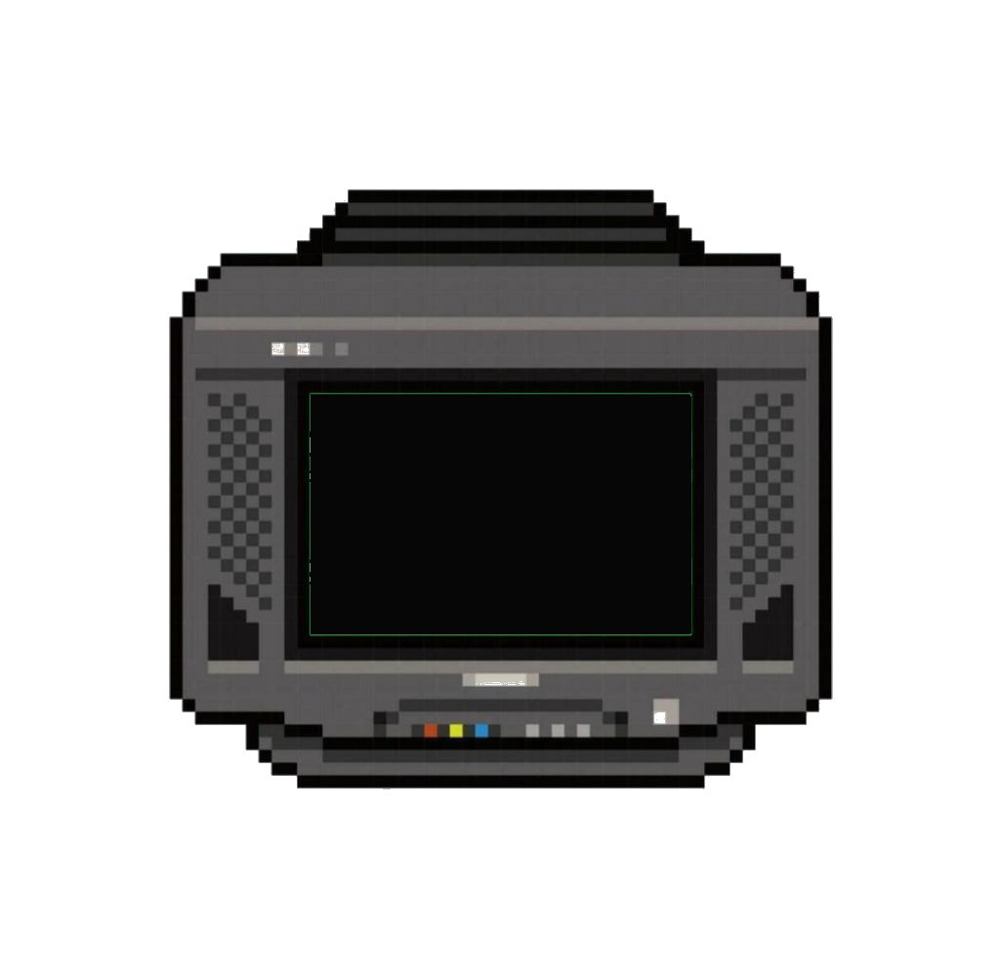

SOUNDWAVE
12 YEARS OF MEMORABILIA · POSTERS, BADGES, ACCESS TIERS & FIELD NOTES
SOUNDWAVE IS MORE THAN THE MUSIC
Acoustic vibrations dissolve into ambient ocean air. The frequency line connects twelve editions of collective memory into a singular pulse.
“The frequency never fades. It only finds new ears.”
Description of the archival artifact.